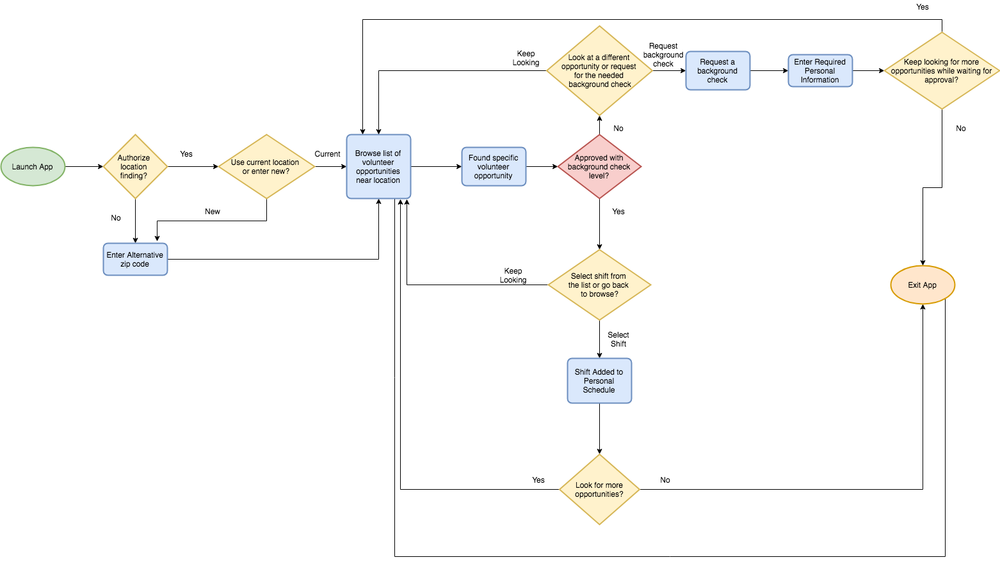
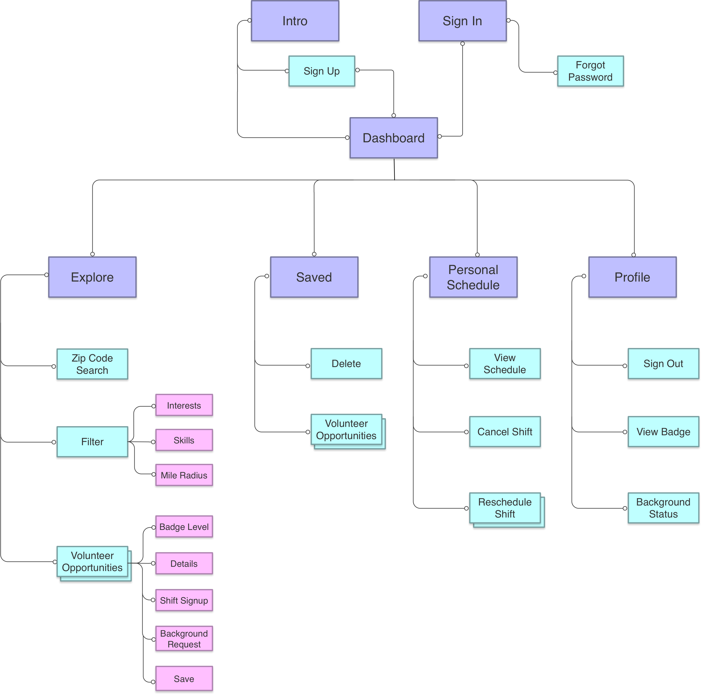
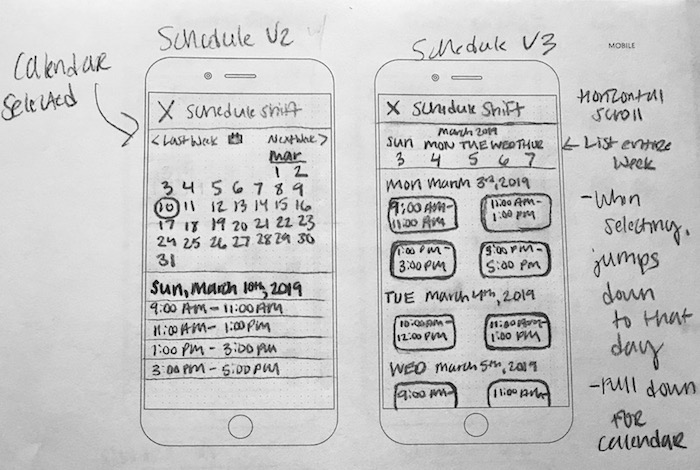
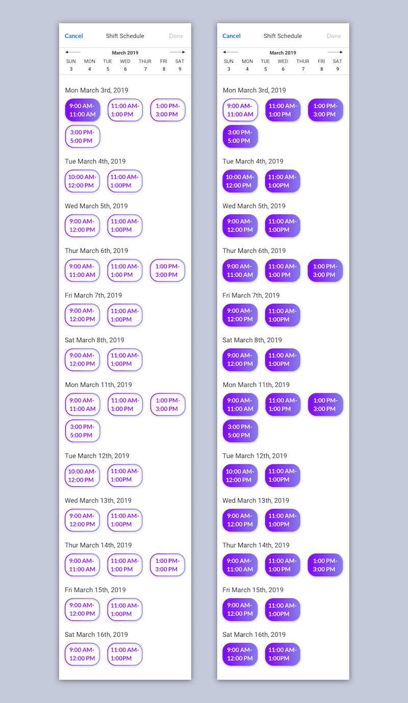
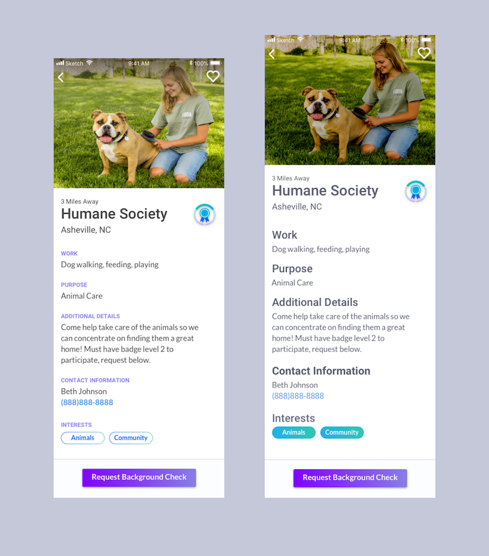

Chip In
Chip In allows users to search for volunteer work nearby, filter by interest, sign up for shifts, and complete a background check that can be used with multiple organizations.
Role
-
UX Research
-
UX Design
-
Visual Design
Tools
-
Figma
-
Sketch
-
Adobe Creative Suite
-
Marvel
-
Usability Hub
-
Maze
-
Draw.io
-
Omnigraffle
Deliverables
-
User Research
-
Competitive Analysis
-
UX Documentation
-
Wireframes
-
Style Guide
-
High Fidelity Mockups
-
Prototype
-
User Testing
Duration
-
6 Weeks
The Problem
THE ORGANIZATIONS
"All organizations have different requirements. There are different levels of background checks that people require based on what population volunteers are working with."
THE USERS
"I have no idea how to find opportunities near me, much less something that I would be passionate about. I never know what work I’ll be doing when I do find something either."
The Solution
Chip In is a volunteer app that allows users to find opportunities near them and filter based on their personal interests and how many miles they want to travel. Most of all, volunteers can know right away what work they will be doing. They can sign up for shifts and save opportunities to view later.
Chip In has three levels of background checks that organizations can choose from as a requirement. Volunteers can submit a request for a background check to participate in an opportunity. Their background check level will be shared with other organizations of the same level, eliminating repeat checks.
Discovery
User Surveys
30.8%
Sign up in person
40.6%
Sign up by web browsing
61.5%
Frustrated by not knowing what work they will be doing
30.8%
Difficult to find opportunities
80.0%
Want to filter by interests
73.3%
Want to look at opportunities near them
53.5%
Want a personal calendar or schedule
46.7%
Want to save opportunities
66.7%
Would like to know the purpose of the work
53.3%
Would like to know the miles away and the organization name
67.0%
Do NOT want social media included
67.0%
Prefer a mobile application
User Interviews
I like having access to contact information for the person organizing the opportunity so I can get in touch if I have questions.
I like having a list of all the shifts that I can scroll through, instead of a calendar that requires an extra step to click on a date.
Scheduling is most important when picking out an opportunity.
I really like seeing pictures of the volunteer opportunity. Something that shows what I might be doing.
So many organizations have different requirements and even training you might have to go through.
It is hard to find work that matches my interests.
Competitive Analysis
When learning from the competition, I decided to analyze JustServe, Verified Volunteers, and Golden Volunteer Opportunity.
Just serve allowed volunteers to filter by their interests but you had to sign up for shifts outside of the application.
Verified volunteers has a great level system for background checks that can be shared between organizations, but volunteers can’t use it on their phones which is the preferred platform.
Golden Volunteer Opportunities focused on social media, but volunteers aren’t interested in making their volunteer work public.
User Personas
Rebecca
Lifelong Volunteer
" It's hard to find volunteer opportunities, which is why I joined the Junior League. Now it's hard to match my schedule when focusing on one organization. "
Goals
Continue to stay involved. Find new opportunities that match her schedule and are closer by.
Frustrations
Not finding opportunities that match her schedule. Driving far away due to having a small amount of options.

Tom
Interest-Driven Volunteer
" I enjoy volunteering for opportunities that are related to my interests which usually change over time. I wish I could find something related to agriculture. "
Goals
Find a volunteer opportunity in the outdoors where he likes to spend his time. Volunteer more often this year.
Frustrations
He finds it difficult to match his interests and often abandons the search. He also doesn't know where his help is really needed in the community.
Elizabeth
Dedicated Advocate
" I usually find opportunities through college but the sign up process is very difficult. They send out a google doc to sign up once a month through email. "
Goals
Make time for organizations that she really cares about. Find new ways to contribute to the community.
Frustrations
She finds it difficult to sign up and keep up with opportunities through google docs and forms.
Information Architecture
User Flows
After conducting my user research and learning the necessary features based on users and competition, I put my user stories to work and designed the user flows needed for an MVP.
Site Map
Before wireframing I first put together my content strategy and site map. Detailing the site map left very few questions when starting the wireframing process.
Wireframes
To begin wireframing I sketched out all of the screens needed for the MVP along with alternative variations. I performed some informal testing with users in person to see which variations they would prefer and how them see themselves using the app.
After finalizing my sketches, I put them into Sketch to create my first low fidelity wireframe to begin testing with Maze.
Main Dashboard

First Introduction Screen

Volunteer Opportunity Screen

Shift Schedule Screen

Interests Filter Screen

Round One User Testing
After user feedback, I altered my wireframes for further testing. Below were the key takeaways:
The ‘Sign In’ option on the introduction screen was mistaken as a ‘Sign up’ button by users and drew out their sign up process.
The apply button used on the filtering screens is at the bottom which can be hard for users to find when dealing with a long list of options like in the interest filter.
Users need a signal showing them that their background check is approved.
On the shift schedule screen some users want to keep scrolling through the list of shift options until they reached their desired choice, instead of horizontally scrolling on the calendar or selecting a specific date.
Users had trouble with saving an opportunity with the heart. It was noted to be monitored in the higher fidelity stages due to the heart not being as noticeable in this low fidelity stage. I also needed to put the user in a specific scenario so they could understand why they would click the heart icon.
Updated Introduction Screen

Background Check Approved!

Allowing for Vertical Scroll

Apply Button Adjustment

After alterations and another round of usability testing, all previous problems were resolved. In this round users wanted to go to the ‘Schedule’ tab to schedule a shift after they were approved for the background check. I redesigned this screen to accommodate for this pathway.
Original Schedule Tab After Approval

New Schedule Tab After Approval

After retesting users were able to complete all of the tasks and follow their desired pathway. I was able to move forward into the visual design portion of the project.
Visual Design
Branding
The branding for Chip In began with mind mapping. I spent time thinking of many words related to volunteer work, community, and giving back. I finally settled on Chip In which conveys a very fun and light tone which matched well with the targeted users of ages 18-37 years old.

Next came the rough logo sketching and refinements. I had several options and many of them would match the desired branding. I reached out to other designers for feedback to decide on a direction for refinement.
The final logo brings back nostalgic memories of when volunteers signed up on paper. The logo started with the font ‘Shadows Into Light’ and was refined until reaching the final logo. The 'C' helps out its neighbor 'i', chipping in.
I decided to go with a blue, green, and purple analogous color scheme. Blue and green are both colors that are often favored by all gender groups. The usage of green and blue also relates very well to the color scheme of earth, sustainability, and community.
Typography guidelines were given in the style guide in order to maintain proper hierarchy and branding.
Icons and badges were designed to fit the Chip In brand. Gradients were used to maintain a fun and modern look.
High Fidelity Mockups
After designing the first verion of mockups, I utilized usability hub to gain insight into user preference. Below are three tests and the final results.
Preference Test One - Shift Schedule Color
Preference Test Two - Shift Schedule AM/PM

Preference Test Three - Volunteer Opportunity Heading Style
Preference Testing & Design Feedback
Users preferred the outline as the main color usage on the shift schedule with the filled in purple showing a selected shift.
Users preferred the AM/PM word usage instead of the icons. Users felt this helped filter through the options.
Users preferred the small, purple headings which also helped give hierarchy to the important details listed.
These findings were implemented in the next version below. I also asked for feedback from two senior designers and made adjustments.
Get Started Screen

Main Dashboard

Background Check Request Form

Volunteer Opportunity Screen

Shift Schedule Screen

Round Two User Testing
As discussed earlier in the wireframing stage, I wanted to verify at this stage that users could save opportunities for later. After putting them into a scenario and making the heart icon visible on the scrim, all users were able to complete the task quickly and easily.
After clicking to confirm a shift, users expected to be put back on the dashboard instead of having to click ‘done’ at the top.
Users weren’t aware of the background check levels/badges.
Users were looking for a security icon or badge on the background check page in order to feel secure about their data.
Users wanted to filter for opportunity requirements, in case they don’t have a few days to wait on a background check and want to volunteer soon.
Most users did not want to allow access to location, which was the primary pathway that the prototype concentrated on.
Based on this feedback, I made changes to better explain the background check levels, add security, add a requirements filter, and updated the prototype with desired pathways.
Design Feedback
Getting Started Screen

Tutorial Screen

Background Check Approved!

Background Check Screen One

Background Check Screen Two

Background Check Request Form

Updated Main Dashboard

Requirements Filter

Alert Banner

The notification banner was designed to let the user know if a shift had been successfully added to their schedule or rescheduled. The past design looked very similar to a call to action button and not enough like a message banner. I did some research into success messages and redesigned it to make more sense for the user.
The background check levels could make the users think that their profile or account is incomplete if they are a level 1 since it shows a completion circle around the badge. It was not intended to convey this and needed to be adjusted to show only the level.


Reflections
I would perform more testing to see how secure users perceive the background check process to be and how I could improve it.
I would change the “Request Background Check” button to a “Complete Requirements” button in order to add in a form for references and a schedule page for signing up for training.
I would also see if it would be preferable to have a filter button that contains all three filters or keep the three filter choices on the dash. I started with only two filters so I didn’t see a need for it, but now that there are three it would be beneficial to perform a test.
I would think of several iterations of the shift schedule. The one I designed is for an MVP and was user focused in its visual and ux design, but I believe there could be a more convenient schedule design.
Is there a way to work with organizations so that users can just get a Level 3 background check? This level is more expensive but the organizations could share cost since they are able to share background verifications. Although users already only enter their information once, this would eliminate levels all together and would allow users to submit one request only.
One user type is focused on schedule because they are very busy and want to fit in a shift here and there. What percentage of the user base is this user? This user would like to first find a time that works for them and then see what opportunities are available. If this is a large percentage of the user base, I would want to see how I could design the app to allow this flow.